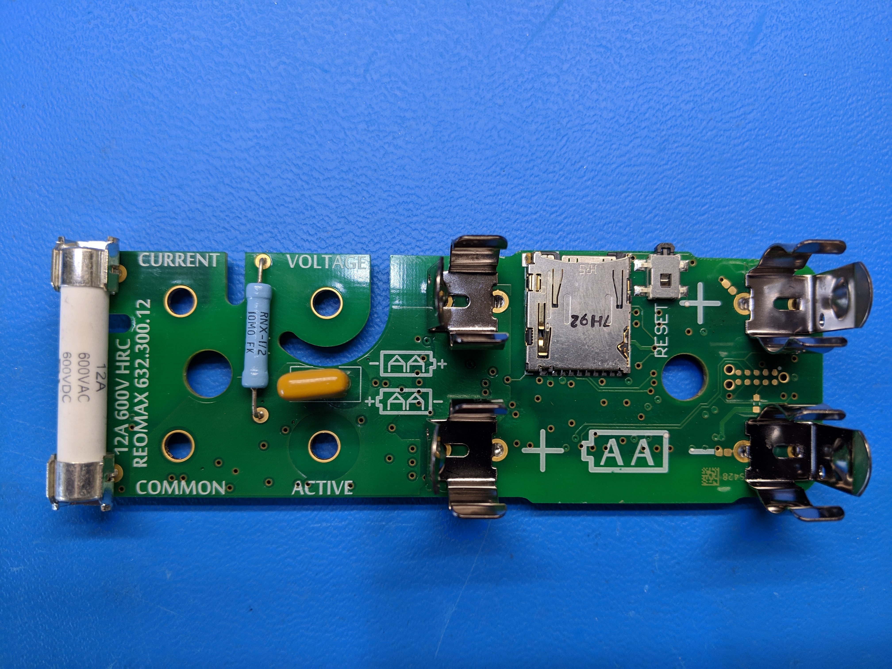
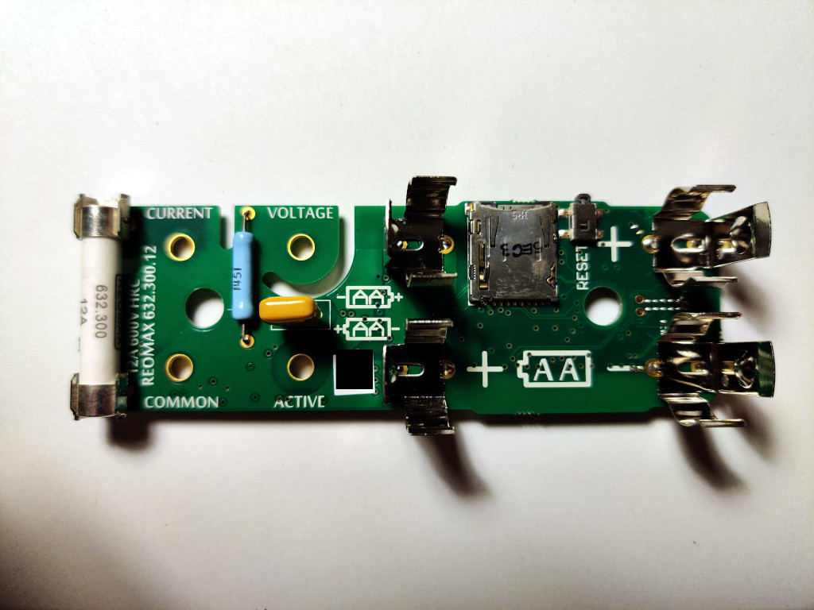
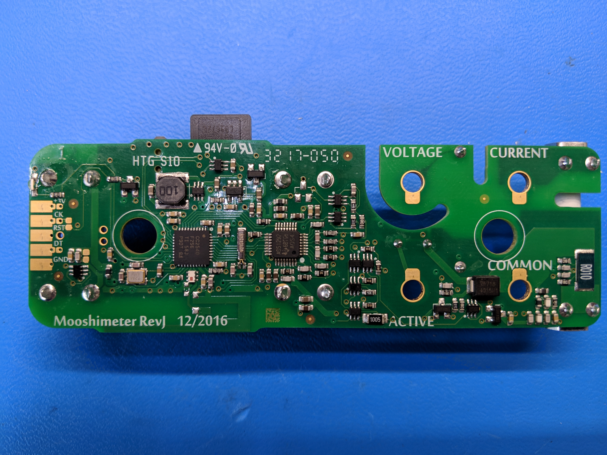

Mooshim Engineering Mooshimeter¶
Mooshim Engineering Mooshimeter¶
| Status | supported |
| Source code | mooshimeter-dmm |
| Counts | 24 bit |
| IEC 61010-1 | CAT III (600V) |
| Connectivity | BLE |
| Measurements | voltage, resistance, diode, continuity, frequency, current, temperature |
| Features | autorange, logging to SD card, current / voltage simultaneously |
| Website | moosh.im |
The Mooshim Engineering Mooshimeter (DMM-BLE-2X01A) is a 24-bit, two channel, CAT III (600V) remote access digital multimeter with Bluetooth Low Energy (BLE) connectivity.
See Mooshim Engineering Mooshimeter/Info for more details (such as hcitool/gatttool output) about the device.
Hardware¶
Multimeter:
- BLE SoC: TI CC2540 (custom firmware)
- ADC: TI ADS1292
Photos¶
{kind=link}
 Mooshimeter Bottom
Mooshimeter Bottom
 Mooshimeter Connection Side
{kind=link}
 Mooshimeter Mugshot
Mooshimeter Mugshot
{kind=link}
 Mooshimeter Ble Soc
Mooshimeter Ble Soc
 Mooshimeter Pcb Top
{kind=link}
 Mooshimeter Component Side
{kind=link}
{kind=link}
{kind=link}
 Mooshimeter Adc
Mooshimeter Adc
Usage¶
Example usage using sigrok-cli:
$ **sigrok-cli --driver mooshimeter-dmm:conn=68-9e-19-cb-e1-71 --scan**
The following devices were found:
mooshimeter-dmm - Mooshim Engineering Mooshimeter with 3 channels: CH1 CH2 P
$ **sigrok-cli --driver mooshimeter-dmm:conn=68-9e-19-cb-e1-71 --show**
Driver functions:
Multimeter
Scan options:
conn
mooshimeter-dmm - Mooshim Engineering Mooshimeter with 3 channels: CH1 CH2 P
Supported configuration options:
continuous: on, off
limit_time:
avg_samples: - supported values:
32
64 (current)
128
256
samplerate - supported samplerates:
125 Hz
250 Hz
500 Hz
1 kHz
2 kHz
4 kHz
8 kHz
channel_config:
$ **sigrok-cli --driver mooshimeter-dmm:conn=68-9e-19-cb-e1-71 --samples 4**
CH1: 0.00 A DC AUTO
CH2: 0.00 V DC AUTO
CH1: 0.00 A DC AUTO
CH2: 0.00 V DC AUTO
$ **sigrok-cli --driver mooshimeter-dmm:conn=68-9e-19-cb-e1-71 -c channel_config="Aux;0.1/T" --samples 4**
CH1: -0.19 V DC
CH2: 298.30 °C DC AUTO
CH1: -0.19 V DC
CH2: 298.30 °C DC AUTO
See also libsigrok's README.devices for more info.
Protocol¶
Though the BLE SoC powering the Mooshimeter appears to be a TI CC2540, the firmware running on it is not the standard "UART to BLE" that is commonly found on them. Instead, it implements the entire meter control and its own custom protocol.
The Mooshimeter protocol is broken down into several layers in a communication stack.
The lowest layer is the BLE GATT stack, which provides two characteristics: one to write packets to the meter and one to receive them from it. The MTU for a packet in either direction is 20 bytes. This is implemented in the GATT abstraction, so we can talk to it via simple write commands and a read callback.
The next layer is the serial stream: each BLE packet in either direction has a 1-byte header of a sequence number. Despite what the documentation says, this is present in both directions (not just meter output) and is NOT reset on the meter output on BLE connection. So the implementation here needs to provide an output sequence number and incoming reassembly for out of order packets (I haven't actually observed this, but supposedly it happens, which is why the sequence number is present). So the structure of packets received looks like:
| 1 byte | 1-19 bytes |
|---|---|
| SeqNum | Serial Data |
On top of the serial layer is the "config tree" layer. This is how the meter actually exposes data and configuration. The tree itself is composed of nodes, each with a string name, data type, and a list of children (zero or more). For value containing (non-informational) nodes, they also contain a 7-bit unique identifier.
Access to the config tree is provided by packets on the serial stream, each packet has a 1-byte header, where the uppermost bit (0x80) is set when writing (i.e. never by the meter) and the remaining 7 bits are the node identifier.
The length of the packets varies based on the datatype of the tree node. This means that any lost/dropped packets can make the stream unrecoverable (i.e. there's no defined sync method other that reconnection).
Packets are emitted by the meter in response to a read or write command (write commands simply back the value) and at unsolicited times by the meter (e.g. continuous sampling and periodic battery voltage). A read packet send to the meter looks like:
| 1 bit | 7 bits |
|---|---|
| 0 | NodeID |
In response to the read, the meter will send:
| 1 bit | 7 bits | 1-N bytes |
|---|---|---|
| 0 | NodeID | NodeValue |
A write packet sent to the meter:
| 1 bit | 7 bits | |
|---|---|---|
| 1 | NodeID | NodeValue |
In response to the write, the meter will send a read response:
| 1 bit | 7 bits | 1-N bytes |
|---|---|---|
| 0 | NodeID | NodeValue |
For the data in the tree, all values are little endian (least significant bytes first). The supported type codes are:
| Code | Description | Wire Format |
|---|---|---|
| 0 | Plain | |
| 1 | Link | |
| 2 | Chooser | uint8_t |
| 3 | U8 | uint8_t |
| 4 | U16 | uint16_t |
| 5 | U32 | uint32_t |
| 6 | S8 | int8_t |
| 7 | S16 | int16_t |
| 8 | S32 | int32_t |
| 9 | String | uint16_t length; char value[length] |
| 10 | Binary | uint16_t length; uint8_t value[length] |
| 11 | Float | float |
Plain and Link nodes are present to provide information and/or choices but do not provide commands codes for direct access (see serialization below). Chooser nodes are written with indices described by their Plain type children (e.g. to select a choice identified by the second child of a chooser, write 1 to the chooser node itself).
On initial connection only three nodes at fixed identifiers are available:
| Node | ID | Type |
|---|---|---|
| ADMIN:CRC32 | 0 | U32 |
| ADMIN:TREE | 1 | Binary |
| ADMIN:DIAGNOSTIC | 2 | String |
The handshake sequence is to read the contents of ADMIN:TREE, which contains the zlib compressed tree serialization, then write the CRC of the compressed data back to ADMIN:CRC32 (which the meter will echo back). Only after that is done will the meter accept access to the rest of the tree.
After zlib decompression the tree serialization is as follows:
| Type | Description |
|---|---|
| uint8_t | The node data type code from above |
| uint8_t | Name length |
| char[length] | Node name (e.g. "ADMIN" or "CRC32") |
| uint8_t | Number of children |
| Node[count] | Child serialization (length varies) |
Once the tree has been deserialized, each node needs it identifier assigned. This is a depth first tree walk, assigning sequential identifiers first the the current node (if it needs one), then repeating recursively for each of its children. Plain and Link nodes are skipped in assignment but not the walk (so the recursion still happens, but the identifier is not incremented).
So, for example a write to the ADMIN:CRC32 as part of the handshake would be a write by us (the host):
| SerSeq | NodeID | U32 (CRC) |
|---|---|---|
| 1 byte | 1 byte | 4 bytes |
| 0x01 | 0x80 | 0xDEADBEEF |
The meter will respond with a packet like:
| SerSeq | NodeID | U32 (CRC) |
|---|---|---|
| 1 byte | 1 byte | 4 bytes |
| 0x42 | 0x00 | 0xDEADBEEF |
A spontaneous error from the meter (e.g. in response to a bad packet) can be emitted like:
| SerSeq | NodeID | U16 (len) | String |
|---|---|---|---|
| 1 byte | 1 byte | 2 bytes | len (=8) bytes |
| 0xAB | 0x20 | 0x0008 | BAD\x20DATA |
The config tree at the time of writing looks like:
<ROOT> (PLAIN)
ADMIN (PLAIN)
CRC32 (U32) = 0
TREE (BIN) = 1
DIAGNOSTIC (STR) = 2
PCB_VERSION (U8) = 3
NAME (STR) = 4
TIME_UTC (U32) = 5
TIME_UTC_MS (U16) = 6
BAT_V (FLT) = 7
REBOOT (CHOOSER) = 8
NORMAL (PLAIN)
SHIPMODE (PLAIN)
SAMPLING (PLAIN)
RATE (CHOOSER) = 9
125 (PLAIN)
250 (PLAIN)
500 (PLAIN)
1000 (PLAIN)
2000 (PLAIN)
4000 (PLAIN)
8000 (PLAIN)
DEPTH (CHOOSER) = 10
32 (PLAIN)
64 (PLAIN)
128 (PLAIN)
256 (PLAIN)
TRIGGER (CHOOSER) = 11
OFF (PLAIN)
SINGLE (PLAIN)
CONTINUOUS (PLAIN)
LOG (PLAIN)
ON (U8) = 12
INTERVAL (U16) = 13
STATUS (U8) = 14
POLLDIR (U8) = 15
INFO (PLAIN)
INDEX (U16) = 16
END_TIME (U32) = 17
N_BYTES (U32) = 18
STREAM (PLAIN)
INDEX (U16) = 19
OFFSET (U32) = 20
DATA (BIN) = 21
CH1 (PLAIN)
MAPPING (CHOOSER) = 22
CURRENT (PLAIN)
10 (PLAIN)
TEMP (PLAIN)
350 (PLAIN)
SHARED (LINK)
RANGE_I (U8) = 23
ANALYSIS (CHOOSER) = 24
MEAN (PLAIN)
RMS (PLAIN)
BUFFER (PLAIN)
VALUE (FLT) = 25
OFFSET (FLT) = 26
BUF (BIN) = 27
BUF_BPS (U8) = 28
BUF_LSB2NATIVE (FLT) = 29
CH2 (PLAIN)
MAPPING (CHOOSER) = 30
VOLTAGE (PLAIN)
60 (PLAIN)
600 (PLAIN)
TEMP (PLAIN)
350 (PLAIN)
SHARED (LINK)
RANGE_I (U8) = 31
ANALYSIS (CHOOSER) = 32
MEAN (PLAIN)
RMS (PLAIN)
BUFFER (PLAIN)
VALUE (FLT) = 33
OFFSET (FLT) = 34
BUF (BIN) = 35
BUF_BPS (U8) = 36
BUF_LSB2NATIVE (FLT) = 37
SHARED (CHOOSER) = 38
AUX_V (PLAIN)
0.1 (PLAIN)
0.3 (PLAIN)
1.2 (PLAIN)
RESISTANCE (PLAIN)
1000.0 (PLAIN)
10000.0 (PLAIN)
100000.0 (PLAIN)
1000000.0 (PLAIN)
10000000.0 (PLAIN)
DIODE (PLAIN)
1.2 (PLAIN)
REAL_PWR (FLT) = 39